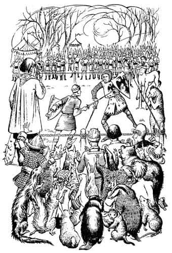
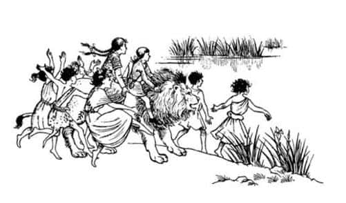
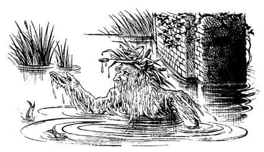
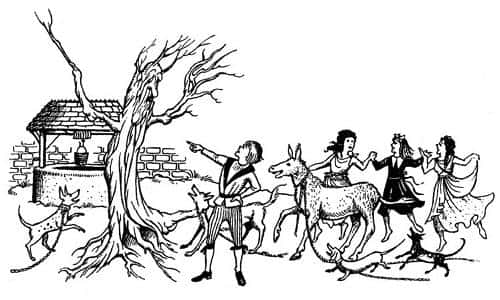

Herkes Çok Meşgul
Saat ikiye doğru Yaygaracı ve Porsuk, diğer yaratıklarla ormanın kenarında oturmuş Miraz’ın ordusunun iki ok atımı uzakta olan parıltılı saflarına bakıyorlardı. Aradaki düzlükte, kazıklarla çevrili kare şeklinde bir alan düello yeri olarak belirlenmişti. Uzak köşelerde Glozelle ve Sopespian kılıçlarını çekmiş, ayakta duruyorlardı. Yakın köşelerde ise, Dev Kazmakürek’le, tüm uyarılara rağmen pençelerini emen, olağanüstü gülünç görünümlü şişman ayı vardı. Neyse ki sağ tarafta (arada bir arka ayaklarını yere vurması dışında kıpırdamadan dikilen) Fırtına, karşısındaki Telmarlı barondan çok daha heybetli görünüyordu. Peter az önce Edmund ve doktorla el sıkışmış, şimdi dövüş alanına doğru yürüyordu. Tüm bunlar müthiş bir yarışın başlama anını andırıyordu; hatta ondan bin beterdi.
“Keşke Aslan iş buraya varmadan önce ortaya çıksaydı” dedi Yaygaracı.
“Keşke” dedi Mantarsever. “Ama üzülme. Arkana bakar mısın?”
“Kargalar ve kapkacak!” diye mırıldandı cüce, arkasına bakar bakmaz. “Ne bunlar? Tanrılar, Tanrıçalar, kocaman insanlar – güzel insanlar. Yüzlercesi, binlercesi bize doğru yaklaşıyor. Bütün bunlar ne demek oluyor?”
“Orman perileri” dedi Mantarsever. “Aslan onları uyandırmış.”
“Hımmm!” dedi cüce. “Eğer düşman hile yapmaya kalkarsa burada bulunmaları bizim için çok yararlı olacak. Ama Miraz kılıcıyla Yüce Kral’dan daha hünerli olduğunu gösterirse, pek yardımları dokunmayacak.”
Porsuk cevap vermedi. Çünkü o anda Peter ile Miraz zincir zırhlarını, miğferlerini ve kalkanlarını kuşanmış, zıt yönlerden düello alanına girmekteydiler. Karşı karşıya gelene kadar ilerlediler. İkisi de eğildi ve birbirlerine bir şeyler söylediler, ancak söylenenleri duymak imkânsızdı. Hemen ardından iki kılıç güneşte parıldadı. Kılıç sesinin duyulmasıyla kaybolması bir oldu; iki ordu da bir futbol maçındaki taraftarlar gibi tezahürata başlamıştı.
“Bravo Peter, bravo!” diye bağırdı Edmund, Miraz’ın tam bir buçuk adım gerilediğini görünce. “Devam et, çabuk!” Peter hamlesini sürdürdü. O an dövüşü kazanıyor gibi görünüyordu, ama Miraz kendini topladı, boy ve ağırlık avantajını iyi kullanmaya başladı. Telmarlıların çılgınca tezahüratı alanı doldurdu: “Miraz! Miraz! Yaşasın Kral!” Caspian ve Edmund gerginlikten ve umutsuzluktan bembeyaz kesilmişlerdi.
“Peter korkunç darbeler yiyor” dedi Edmund.
“Hey!” dedi Caspian. “Şimdi ne oluyor?”
“Ayrılıyorlar” dedi Edmund. “Sanırım yoruldular. Bak. Ah, şimdi tekrar başlıyorlar, bu sefer daha iyi. Birbirlerinin etrafında dolanıyorlar, birbirlerini sınıyorlar.”
Doktor, “Korkarım Miraz bu işi iyi biliyor” diye mırıldandığı sırada Eski Narnialılar alkışlayarak, külahlarını havaya fırlatarak, kulakları sağır eden bir tezahürata başladılar. “Ne oldu? Ne oldu?” diye sordu Doktor. “Yaşlı gözlerim görmedi.”
“Yüce Kral, Miraz’ı koltuk altından yaraladı” dedi Caspian alkışlamayı sürdürerek. “Zırhın eklem yerinden, kılıcın ucunun geçebildiği yerden yaralandı. İlk kan.”
“Hay aksi, Peter şimdi kötü durumda” dedi Edmund. “Kalkanını gerektiği gibi kullanmıyor. Sol kolundan yaralanmış olmalı.”

Gerçekten de öyleydi. Herkes Peter’in kalkanını sıkı tutamadığını görebiliyordu. Telmarlıların tezahüratı arttı.
“Sen benden daha çok savaş gördün” dedi Caspian. “Hiç şansı var mı?”
“Çok az” dedi Edmund. “Belki yenebilir. Ama şansı yaver giderse.”
“Ah, böyle olmasına neden izin verdik ki?” dedi Caspian.
Aniden iki tarafın da tezahüratı kesildi. Edmund şaşkınlığı üstünden atar atmaz, “Ah, anlıyorum. İkisi de dinlenmeye karar verdi” dedi. “Haydi Doktor, Yüce Kral için bir şeyler yapabiliriz belki.” İkisi de dövüş alanına doğru koştu. Peter, ter içinde, yüzü kıpkırmızı, göğsü inip kalkarak iplerin dışına, onların yanına geldi.
“Sol kolundan mı yaralandın?” diye sordu Edmund.
“Tam öyle denilemez. Bir kamyon dolusu tuğla gibi, bedeninin tüm ağırlığıyla kalkanıma yüklendi ve kalkanın kenarı bileğime battı. Kırıldığını sanmıyorum ama bir burkulma olabilir. Sıkı sararsanız idare edebilirim.”
Sargı yapılırken Edmund endişeyle sordu, “Onun hakkında ne düşünüyorsun Peter?”
“Zor” dedi Peter. “Çok zor. Onu hareket etmeye zorlarsam şansım olabilir. Böylesine sıcak bir günde, fazla kiloları ve yaşı aleyhine olacaktır. Gerçeği söylemek gerekirse, tek çarem bu. Beni yenerse, herkese, evdeki herkese onları çok sevdiğimi söyle Ed. Geri geliyor. Görüşmek üzere, eski dost. Hoşça kal Doktor. Ha unutmadan Ed, özellikle Yaygaracı’ya iyi bir şeyler söyle. Hep güvenilir bir dost oldu.”
Edmund bir şey diyemedi. Doktorla birlikte içlerinde bir acı hissederek kendi saflarına döndüler.
Ancak şimdi dövüş iyi gidiyordu. Peter ayaklarını çok iyi kullanıyor, kalkanını daha sıkı tutabiliyordu. Şimdi Miraz’la köşe kapmaca oynuyordu; erişemeyeceği uzaklıkta duruyor, yerini değiştiriyor, düşmanını harekete zorluyordu.
“Korkak!” diye yuhaladı Telmarlılar. “Neden dövüşmüyorsun? Hoşuna gitmiyor mu, ha? Dövüşmeye geldiğini sanmıştık, dans etmeye değil. Yuuh!”
“Umarım bunlardan etkilenmez” dedi Caspian.
“Etkilenmez” dedi Edmund. “Onu bilmezsin sen.” Sonunda Miraz, Peter’in miğferine bir darbe indirmişti. Peter sendeledi, yana doğru kaydı ve dizinin üstüne düştü. Telmarlıların haykırışları dalga dalga yükseldi. “Haydi Miraz” diye bağırdılar. “Şimdi. Hemen! Hemen! Öldür onu.” Ama zorbayı cesaretlendirmeye gerek yoktu. Anında Peter’in üzerine atılmış, kafasını uçurmak üzereydi. Kılıç Peter’in üzerine doğru inerken Edmund dudaklarını kanatana kadar ısırdı. Tanrı’ya şükürler olsun! Kılıç Peter’in sağ omzundan kayıp geçmişti. Cücelerin yaptığı zırh sağlamdı ve bu darbeye dayanmıştı.
“Yüce Tanrım!” diye bağırdı Edmund. “Tekrar ayağa kalktı. Saldır Peter, saldır!”
“Ne olduğunu göremedim” dedi Doktor. “Nasıl kalktı?”
“Kılıcı indirirken Miraz’ın kolunu yakaladı” dedi Yaygaracı neşeyle dans ederek. “Erkek dediğin böyle olur! Düşmanının kolunu payanda olarak kullanıyor. Yüce Kral! Yüce Kral! Yaşasın Eski Narnia!”
“Bakın” dedi Mantarsever. “Miraz öfkelendi, bu çok iyi.”
Şimdi hamle üstüne hamle yapıyorlardı. Birbirlerine öylesine sert darbeler indiriyorlardı ki, şimdiye kadar çoktan ölmüş olmaları gerekirdi. Heyecan arttıkça tezahürat azaldı. Seyirciler nefeslerini tutmuş, bu muhteşem dövüşü seyrediyorlardı.
Eski Narnialılardan büyük bir bağırtı yükseldi; Miraz düşmüştü. Peter’in darbesiyle değil, bir ağaç köküne takılıp yüzüstü kapaklanmıştı. Peter onun kalkması için geriye çekildi.
“Of, kahretsin, kahretsin, kahretsin” dedi Edmund kendi kendine. “Bu kadar centilmence davranmaya gerek var mı? Ama galiba var. O bir şövalye ve Yüce Kral. Bu, Aslan’ın hoşuna gidecektir. Ancak ‘bu hayvan’ bir dakika sonra yine ayağa kalkar ve sonra—”
Fakat ‘bu hayvan’ ayağa kalkamadı. Lordlar, Glozelle ve Sopespian kendi planlarını hazırlamışlardı. Krallarını yerde görür görmez haykırarak kavga alanına atladılar. “Hile yaptı! Hile yaptı! Narnialı hain onu yerde savunmasız yatarken arkadan bıçakladı. Silah başına! Silah başına, Telmar!”
Peter ne olduğunu anlayamadan, iki iri adamın kılıçlarını çekip kendine doğru koştuğunu gördü. Sonra üçüncü bir Telmarlı sol taraftaki iplerin üzerinden atladı.
“Silah başına Narnia. Aldatıldık!” diye bağırdı Peter. Eğer üçü birden hemen ona saldırsalardı ağzını bile açamazdı. Ancak Glozelle kendi kralını yattığı yerde bıçaklayarak öldürmek üzere durmuştu: “Bu, sabah bana hakaret ettiğin için” diye fısıldadı bıçağı saplarken. Peter, Sopespian’ı karşılamak için döndü; bir darbeyle ayaklarını yerden kesti ve kafasını uçurdu. Şimdi Edmund yanı başında haykırıyordu: “Narnia! Narnia! Aslan!” Tüm Telmar ordusu onlara doğru koşuyordu. Ancak şimdi dev ileri doğru yürümeye başlamış, bir ucu aşağıda olan sopasını sallıyordu. Sentorlar saldırıya geçti. Hemen ardından cücelerin oklarından tınnn, tınnn ve yukarıdan sss, sss sesleri duyuldu. Yaygaracı, Peter’in sol tarafında dövüşüyordu. Savaş başlamıştı.
“Geri dön Bastıbacak, seni küçük eşek!” diye bağırdı Peter. “Öldürürler sizi. Burası fareler için uygun yer değil.” Ne var ki küçük ve gülünç yaratıklar iki ordunun da ayakları arasında kılıçlarıyla dürtükleyerek dans eder gibi sağa sola koşuşuyorlardı.
O gün pek çok Telmar savaşçısı düzinelerce şişin ayaklarına battığını hissetmiş, acıyla küfürler savurup tek ayağı üstünde hoplamış, sapır sapır yere düşmüştü. Düşenlerin işini fareler bitiriyor, öbürlerini de başka birileri hallediyordu. Eski Narnialılar daha savaşa ısınmadan düşmanın bozguna uğradığını gördüler. Sert görünümlü savaşçılar kireç gibi olmuş yüzleriyle Eski Narnialılara değil, onların ardındaki başka bir şeye bakıyor ve silahlarını bırakıp, “Ağaçlar! Ağaçlar! Kıyamet günü geldi!” diye bağırıyorlardı.
Daha sonra ne bağırışlar ne de silah sesleri duyulur oldu; tüm sesler, Peter’in ordusunun safları arasına dalıp sonra da Telmarlıları kovalayan uyanmış ağaçların, okyanus dalgalarına benzeyen gürlemesinde boğulmuştu.
Bir sonbahar akşamı, var gücüyle esen çılgın bir lodosta, yüksek bir dağın sırtındaki ormanın kıyısında durdunuz mu hiç? O sesi bir düşünün. Ve sonra o ormandaki ağaçların bulundukları yerden koca koca insanlar gibi size doğru koştuğunu, upuzun dalları kollar gibi sallanırken, başlarının hareketiyle etrafa sağanak yağmur gibi yaprak düştüğünü; bu halleriyle bile hâlâ birer ağaca benzediklerini düşünün. Telmarlılar için ağaçlar böylesine korkutucuydu işte. Az da olsa Narnialılar için bile korkutucuydu. Birkaç dakika sonra Miraz’ın tüm yandaşları, köprüyü geçip Beruna şehrine ulaşmak için Büyük Nehir’e doğru kaçıyorlardı. Orada surların ve kapalı kapıların ardında kendilerini koruyabileceklerini umut ediyorlardı.
Nehre ulaştıklarında köprünün yerinde olmadığını fark ettiler. Köprü bir gün öncesinden beri yerinde yoktu! İşte o zaman tam anlamıyla paniğe kapılıp dehşete düştüler ve teslim oldular.
Acaba köprüye ne olmuştu?
O sabah kızlar erkenden uyanmış, yanı başlarında duran Aslan’ın, “Tatile çıkıyoruz” dediğini duymuşlardı. Gözlerini ovuşturup etrafa baktılar. Bütün ağaçlar yerlerinden oynamıştı, kara bir kitle halinde Aslan’ın Kümbeti’ne doğru hareket etmekte oldukları görülebiliyordu. Baküs, Maenad’lar – yani Baküs’ün çılgın ve deli kızları – ve Silenus onlarla beraberdi. Lucy iyi dinlenmişti, sıçrayarak ayağa kalktı. Herkes uyanmıştı. Etrafta neşe vardı; flütler çalınıyor, ziller vuruluyordu. Hayvanlar – konuşamayan hayvanlar bile – dört bir taraftan akın akın kalabalığa katılıyordu.
“Ne oluyor, Aslan?” dedi Lucy, gözleri pırıl pırıl, ayakları kıpır kıpırdı.
“Gelin çocuklar” dedi Aslan, “gelin yine sırtıma binin.”
“Ah, ne harika!” diye bağırdı Lucy. Ve iki kız – hiç kimse, yıllar önce aynı şeyi yaptıklarını bilmiyordu – Aslan’ın altın renkli sıcacık sırtına tırmandılar. Aslan en önde, zıplayıp koşan, taklalar atan Baküs ve Maenad’larla sağda solda sıçrayarak oyunlar oynayan hayvanlar onun ardında ve Silenus ile eşeği en arkada olmak üzere bütün grup harekete geçti.

Sağa yönelip dik bir yokuştan aşağı hızla indiler. Beruna Köprüsü önlerinde uzanıyordu! Köprüyü geçmeye hazırlandıkları sırada suyun içinden bir insanınkinden büyük, sakallı bir baş yükseldi. Hasırotlarından bir tacı vardı. Aslan’a baktı ve derinlerden gelen bir sesle:

“Selam lordum” dedi. “Zincirlerimi çözün.”
“Bu da kim?” diye fısıldadı Susan.
“Sanırım Nehir Tanrısı, ama sen ses çıkarma” dedi Lucy.
“Baküs” diye seslendi Aslan. “Zincirlerinden kurtar onu.”
“Köprüden bahsediyor olmalılar” diye düşündü Lucy. Öyleydi. Baküs ve yardımcıları sığ sulara koştular ve birkaç dakika sonra çok tuhaf şeyler olmaya başladı. Köprünün kemerlerinden yukarıya büyük ve güçlü sarmaşık gövdeleri tırmanmaya başlamıştı. Bir ateşin büyümesi gibi, hızla büyüyor ve taşların etrafını sararak, onları kırıp parçalıyorlardı. Köprünün duvarları bir an için alıç ağaçlarıyla kaplı şirin bir çit gibi göründü ve sonra her şey büyük bir gürültüyle çökerek suların girdabında kayboldu. Cümbüşçüler, sularda oynayarak, çığlıklar ve kahkahalar atarak (“Hurra! Yine Beruna Sığlıkları’na kavuştuk!” diye bağırdı kızlar), yürüyerek, yüzerek ya da dans ederek sığlıkları geçtiler ve öte yakada kıyıya çıkıp şehre girdiler.
Yol üzerinde kim varsa önlerinden kaçıyordu. Karşılaştıkları ilk bina bir okuldu: Saçları sımsıkı bağlanmış, boyunlarında çirkin ve sıkı yakalar, bacaklarında kalın ve kaşındırıcı çoraplar olan bir sürü Narnialı kızın tarih dersi gördüğü bir okuldu bu. Miraz’ın hâkimiyetindeki Narnia’da öğretilen türden “tarih”, bildiğiniz tarihten daha sıkıcı ve birçok heyecanlı maceradan daha az inandırıcıydı.
“Gwendolen, pencereden dışarıya bakmayı bırakıp dinlemezsen, sana kötü davranış notu vermek zorunda kalacağım” dedi öğretmen.
“Fakat Bayan Prizzle, lütfen” dedi Gwendolen, “dışarıda bir aslan var.”
“Dediğimi duymadın mı, Gwendolen?” diye sordu Bayan Prizzle.
“Fakat Bayan Prizzle, dışarıda bir aslan var.”
“Saçmaladığın için iki kötü not veriyorum” dedi Bayan Prizzle. “Şimdi—” Bir kükreme sözünü kesmişti. Sarmaşıklar kıvrılarak sınıfın pencerelerine tırmandı. Duvarlar pırıltılı, yeşil bir kütleyle kaplandı ve çok yapraklı dallar tavanı da kaplayıp bir kemer oluşturdu. Bayan Prizzle kendisini ormandaki bir alanda çimler üzerinde ayakta dururken buldu. Sakinleşmek için masasına tutunmak istedi ama masasının bir gül ağacına dönüştüğünü gördü. Rüyasında bile göremeyeceği çılgın insanlar etrafını sarıyordu. Sonra Aslan’ı gördü, bir çığlık atarak kaçmaya başladı. Onunla beraber çoğu tombul bacaklı ve hantal kızlardan oluşan sınıf da kaçıyordu. Gwendolen duraksadı.
“Sen bizimle kalacak mısın, tatlım?” dedi Aslan.
“Ah, kalabilir miyim? Teşekkür ederim, teşekkür ederim” dedi Gwendolen. Aynı anda, giydiği rahatsız ve gereksiz elbiselerden bazılarını çıkarmasına yardım eden ve onu neşeli bir dansla fırıl fırıl döndüren Maenad’lardan ikisiyle el ele tutuşmuştu.
Küçük Beruna şehrinde gittikleri her yerde aynı şeyler oluyordu. İnsanların çoğu kaçmış, birkaçı onlara katılmıştı. Şehri terk ettiklerinde daha kalabalık ve daha mutlu bir gruptular.
Nehrin kuzey, yani sol yakasındaki tarlalarda ilerlediler. Her çiftlikten onlara katılmak üzere hayvanlar çıkıyordu. Yaşamlarında hiç mutlu olamamış yaşlı ve hüzünlü eşekler birden bire gençleşiyor; zincire bağlı köpekler zincirlerini kırıyorlar, atlar arabalarını parçalıyor ve onlarla beraber havaya çamur sıçratıp kişneyerek, dıgıdık dıgıdık koşturuyorlardı. Bahçelerden birindeki kuyunun yanında, bir çocuğu döven bir adamla karşılaştılar. Adamın elindeki sopa aniden bir çiçeğe dönüştü. Adam çiçeği fırlatmak istedi, ama eline yapışmıştı. Sonra kolları dallara, vücudu bir ağaç gövdesine, ayakları köklere dönüştü. Az önce ağlamakta olan çocuk kahkahalar atıp onlara katıldı.

İki nehrin birbirine karıştığı Kunduzbarajı’na giderken, yarı yoldaki bir kasabada, yorgun görünen bir kızın domuzlara benzeyen oğlan çocuklarına aritmetik öğrettiği bir başka okula rastladılar. Pencereden dışarıya bakarak yolda şarkılar söyleyen bu tanrısal cümbüşü görünce, kızın kalbi sevinçle doldu. Aslan pencerenin hemen altında durup ona baktı.
“Yapma, yapma” dedi kız. “İsterdim ama yapmamalıyım. İşime devam etmeliyim. Çocuklar görürlerse çok korkarlar.”
“Korkmak mı?” dedi çocukların domuza en fazla benzeyeni. “Pencereden kiminle konuşuyor? Bizi eğitmek yerine başka şeylerle uğraştığını müfettişe söyleyelim.”
“Gidip bakalım kimmiş?” dedi bir başka çocuk ve hepsi pencerenin önüne toplandılar. Fakat küçük ve acımasız yüzleri pencerede görünür görünmez, Baküs bütün gücüyle Euan, euoi-oy-oy-oy diye bağırdı ve oğlanlar korkuyla çığlıklar atarak pencerelerden atlayıp, birbirlerini çiğneyerek kapılardan dışarıya kaçmaya başladılar. Gerçek mi değil mi bilinmez ama, küçük çocuklar kaybolduktan sonra, ülkenin bu bölgesinde besili, güzel domuzların ortaya çıktığı söylenir oldu. Oysa çocuklar kaybolmadan önce ortada domuz momuz yoktu.
“Haydi bakalım” dedi Aslan öğretmene. Öğretmen pencereden atlayarak onlara katıldı.
Kunduzbarajı’nda nehri tekrar geçerek güney kıyıları boyunca doğuya doğru ilerlediler. Kapısının önünde, ayakta duran bir çocuğun ağladığı bir kulübeye geldiler. “Niçin ağlıyorsun, canım?” diye sordu Aslan. Yaşamında aslan resmi bile görmemiş olan çocuk ondan korkmamıştı. “Halam çok hasta” dedi kız, “ölecek.” Aslan kulübenin kapısından içeriye girmeye çalıştı, ne var ki kapı onun için çok küçüktü. Başını içeriye soktu, omuzlarıyla iterek bütün evi kaldırdı (bunu yaptığında Lucy ve Susan düşmüştü) ve ev geriye doğru düşerek parçalandı. Evi paramparça olan küçük ve yaşlı kadın, hiçbir şey olmamış gibi, hâlâ yatağının içindeydi. Ölümün eşiğindeydi. O kadar küçüktü ki, cüce soyundan geliyordu sanki. Gözlerini açıp da Aslan’ın parlak ve tüylü başını karşısında görünce, ne bir çığlık attı ne de bayıldı. “Ah Aslan! Gerçek olduğunu biliyordum. Yaşamım boyunca bu günü bekliyordum. Beni almaya mı geldin?” dedi.
“Evet, sevgili kadın” dedi Aslan. “Ama uzun yolculuk için değil.” Aslan konuşurken, kadının yüzüne tanyeri ışığına benzeyen bir renk gelmişti. Kalkıp oturdu, “Ah, kendimi çok iyi hissettiğimi söylemeliyim” dedi. “Sanırım bu sabah kahvaltı niyetine bir şeyler atıştırabilirim.”
“Al anneciğim” dedi Baküs, kuyuya bir sürahi daldırıp ona vererek. Sürahinin içinde su değil en güzelinden şarap vardı; pancar kadar kırmızı, bir boğayı devirecek kadar güçlü, çay kadar iç ısıtıcı, çiy kadar serindi.
“Eh, kuyumuza bir şeyler yapmışsın” dedi yaşlı kadın. “Bu iyi bir değişiklik, çok iyi.” Sonra da sıçrayarak yataktan kalktı.
“Bin sırtıma” dedi Aslan. Susan ve Lucy’ye dönerek, “Siz kraliçeler artık koşmak zorundasınız” diye ekledi.
“Peki. Biz koşmaktan da hoşlanırız” dedi Susan ve tekrar yola çıktılar.
Nihayet, şarkılar söyleyerek, hoplaya hoplaya danslar ederek, müziklerle, kahkahalarla, kükremelerle, havlamalarla, kişnemelerle yola koyuldular. Miraz’ın ordusunun kılıçlarını atıp teslim olduğu, Peter’in ordusununsa ellerinde silahları, derin derin soluyarak, onların etrafını sardığı yere geldiler.
İlk olay, yaşlı kadının Aslan’ın sırtından inip Caspian’a koşması ve ikisinin kucaklaşmasıydı, çünkü kadın Caspian’ın dadısıydı.